GPR106 Week 6 notes
Sharing, decoupling and triggering in Unity. No, this is not relationship advice. We’re talking events, delegates and messages.
- GPR106 Week 6 notes
New Unity!
We have 2019.1.7 installed and working in lab 2:04 in Ultimo, so we can all update and enjoy the new features. You can submit Assignment 2 using 2019.1 or 2018.2 if you’d rather not upgrade.
Unity old versions in the Download Archive
https://unity3d.com/get-unity/download/archive
Direct Unity Hub link to 2019.1.7f1
unityhub://2019.1.7f1/f3c4928e5742
Visual Studio .net 4.6 targeting
You might find that opening a unity c# script in VS gives you an error dialogue.
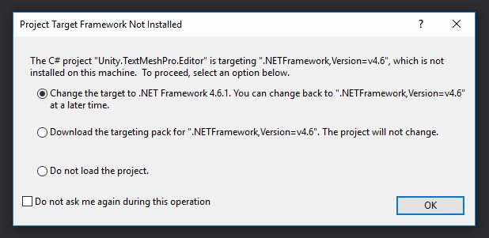
Select “Download the targeting pack” and install the downloaded file, restart unity and VS.
Today: Avoiding noodly code in a GUI
Clone this project from my Github for today’s exercise:
https://github.com/dmcgits/locks_broadcasting_unity.git
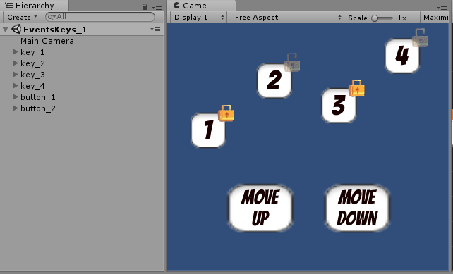
Managing complexity.
Lots of elements in your game using code results in lots of classes.
Classes can end up tightly coupled, or connected all over the place
Tightly coupled: classes that use lots of features of another, and can break with a small change to the other.
Things we want to avoid:
- having to find and store too many other gameObjects in variables
- needing to know and use loads of functions and variables on other objects
- very long classes which have lots of functions just to modify or read from other objects.
- exposing lots of variables/methods and inviting dependency
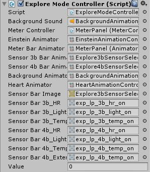
_It’s also crappy work having to drag in all these dependencies.
Decoupling is really about communication
A game is a big system, and lots of objects need to talk to eachother. Too much direct communication makes things rigid, and that creates… friction!
Friction: A resisting force. Anything that makes it harder for us to do something.
When things start to scale up, we don’t want our software design to limit our imaginations:

Moar units
We learned variables and lists, are they bad?
No!
- As with anything, the poison is in the dose.
- Create too many direct connections, too much association, it gets inflexible
In circuit board design the view for laying out the direct connections is literally called a ratsnest. Because no matter how nicely you lay things out, it’s a hairy situation.
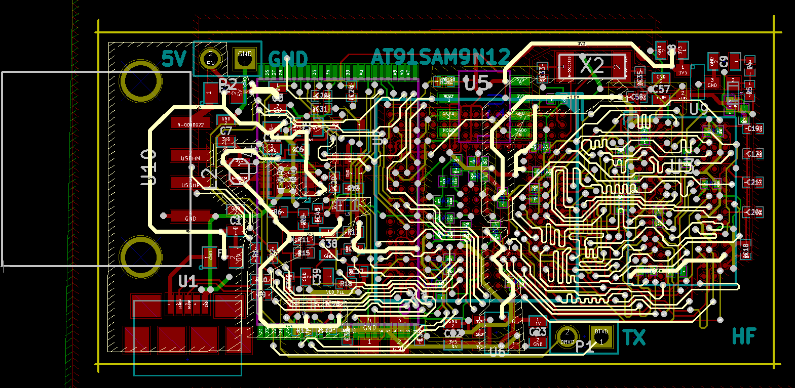
Even a nicely routed pcb has a lot of connections running in multiple layers
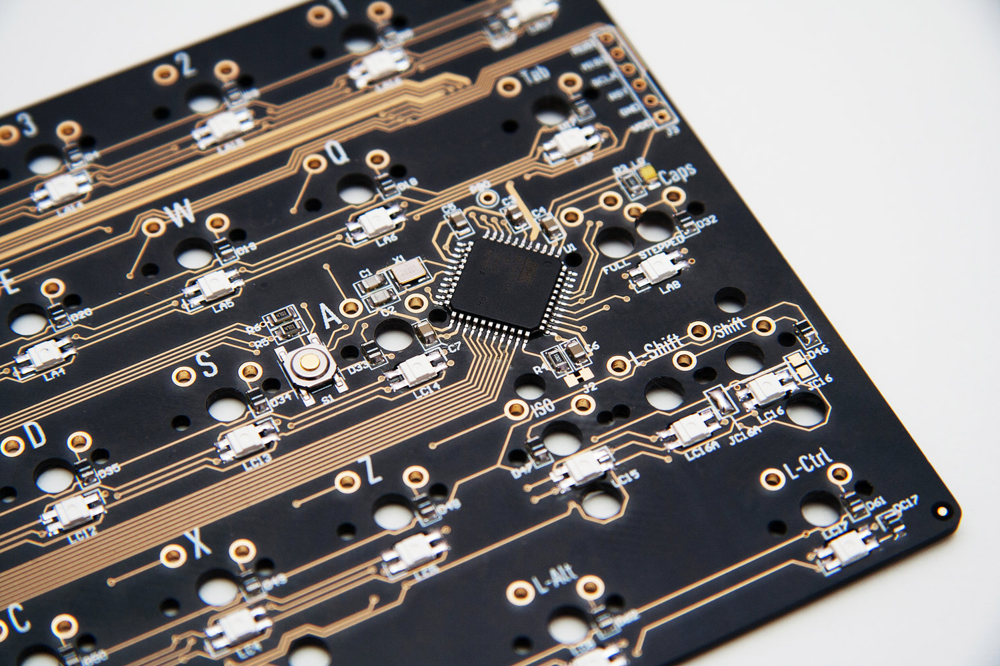
Birect connections: pretty in moderation
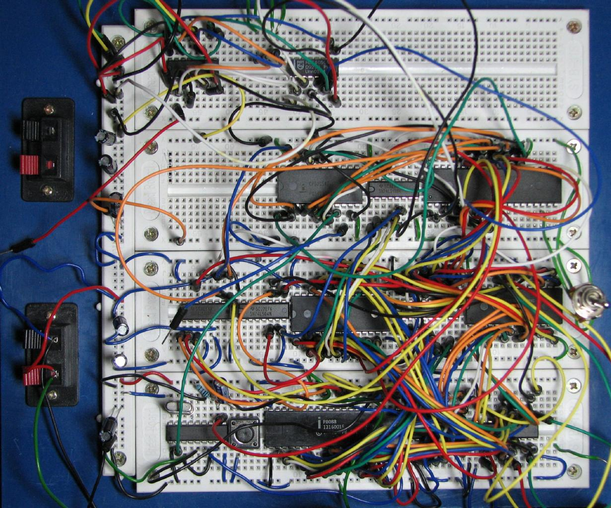
Prototyping a circuit board: making connections with wires
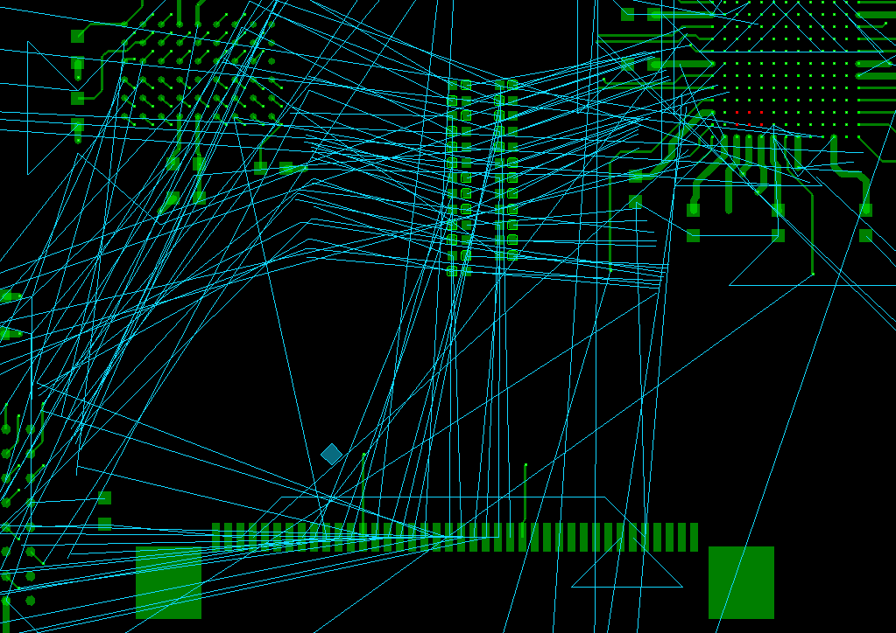
These are the logical connections. In code we try to avoid the next stage, routing.
Have you ever built a pc, expecting this?
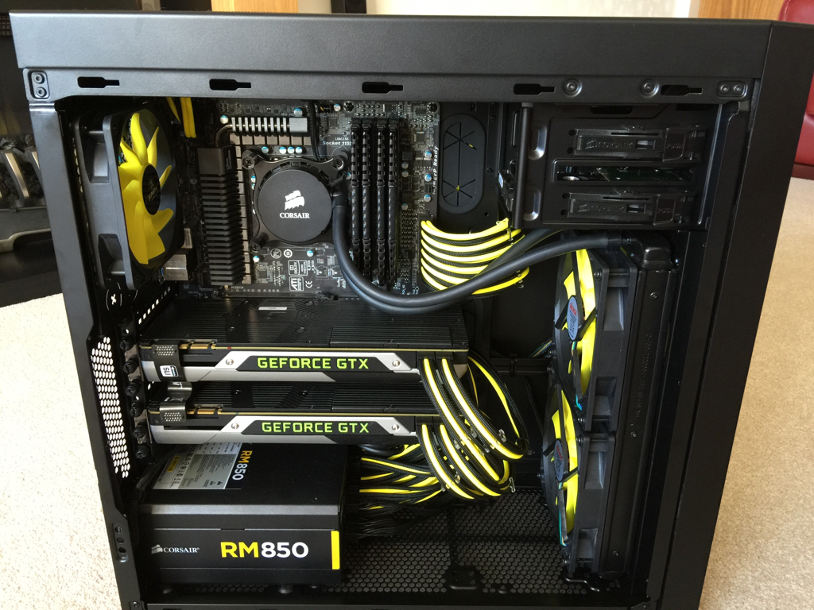
Cable management
and ended up with this?
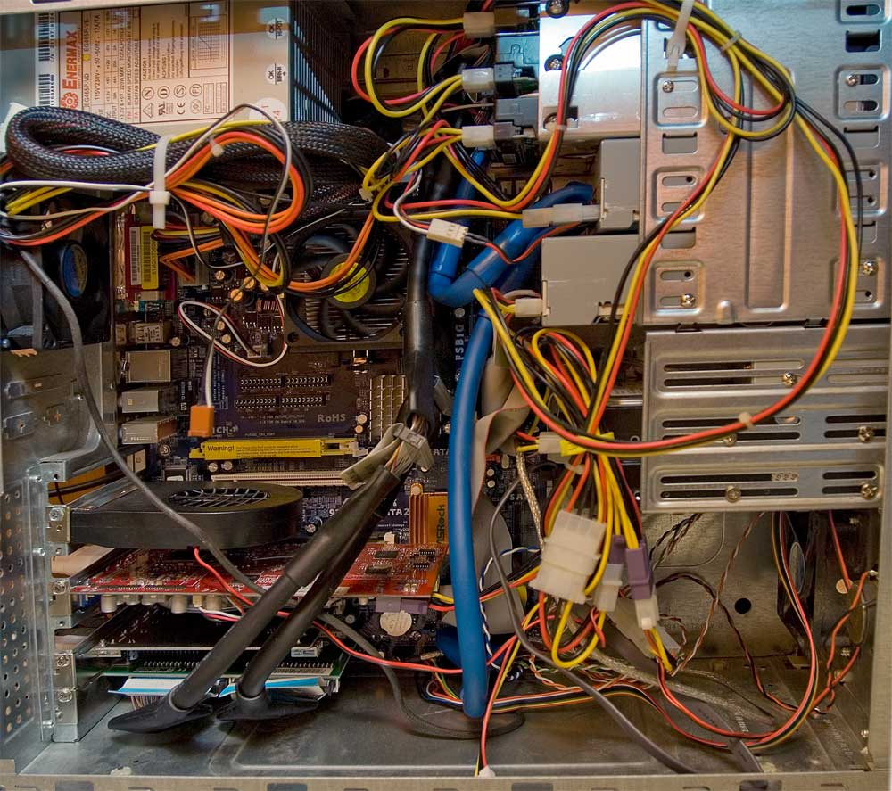
Madness
One more time: direct versus broadcast
1: Less like email:
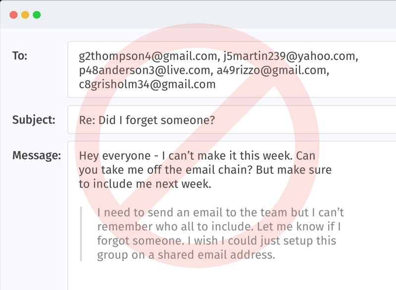
more like Twitter.
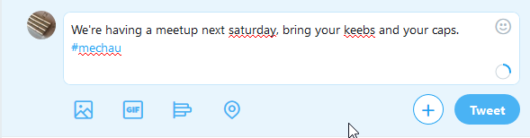
2: Less like direct ethernet wiring your network:
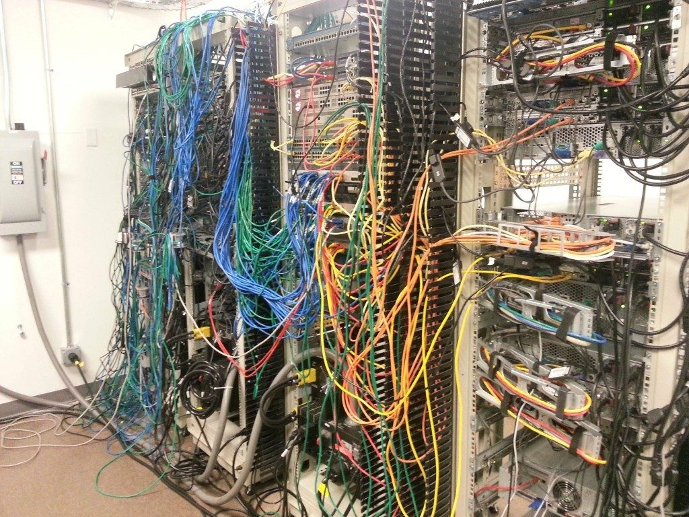
more like Wifi:
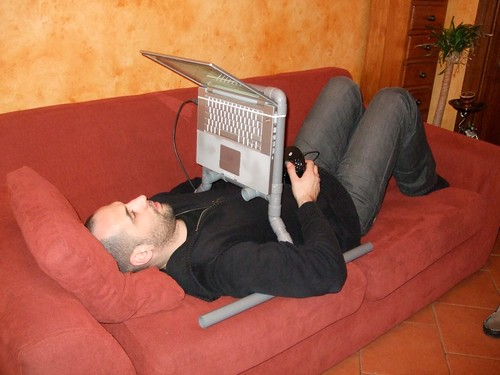
Boss mentality
Let’s be honest, parts of your game aren’t doing their job if they’re not reacting to change. The score text and energy bar, the mini map etc. You shouldn’t have to tell them directly.
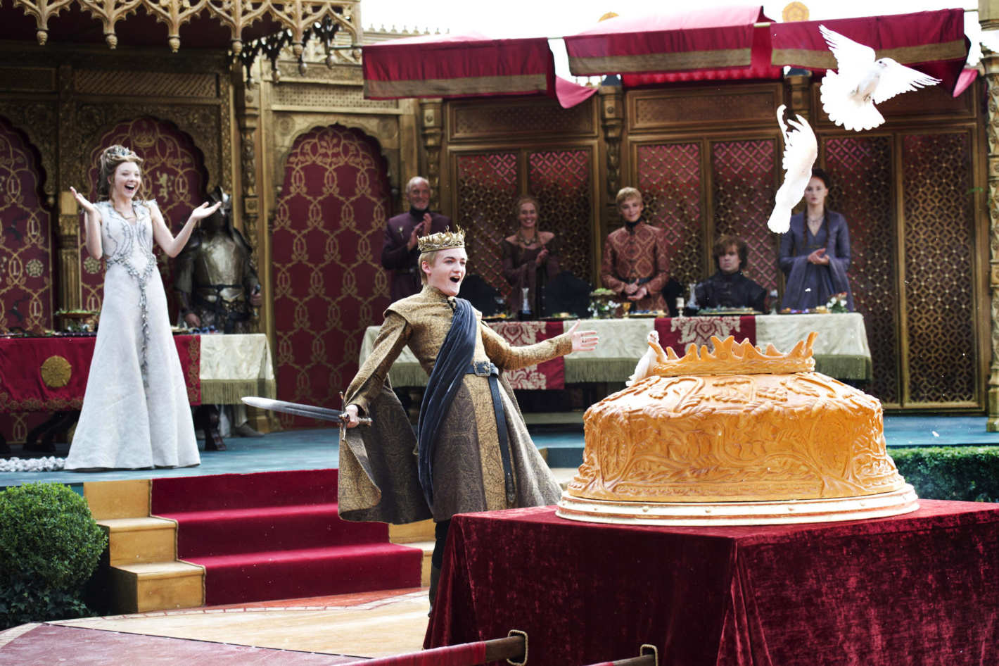
Cake is amazing! Whoever doesn’t clap for cake better have kneck armour!
Events, SendMessage, Broadcast Message
We need some sort of system where we can yell variables into the air and leave it to other desperate objects to listen and know what to do about it.
Unity and c# provide some great tools for broadcasting and listening in. We’ll have a look at three of them.
SendMessage
Talking to components indiscriminately.
BroadcastMessage
Talking to components on all children indiscriminately!

Clicking to lock things in place, with the lock state visible
Events
One of the most common ways to broadcast in code is via Events and event listeners (aka event handlers).
Events are your object’s broadcasted information. Event Listeners in other objects hear them and do what they think is best.
Events driving a GUI

Here I’ve just made a project to move a few things up and down, when they are unlocked.
- Even on this teeny thing, look at the heirarchy on the left there.
- How much do you like repeating the same action on 20 things.
Let’s watch this in action
Up the top are just some rectangles with numbers. I was thinking of them as keyboard keys (visually) at the time. Move Up and Move Down are buttons to control them.
How it’s put together:
- The move buttons are saying to the twitterverse "I Request a move"
- The keys are listening out for those events
- They then individually choose what to do. If they are locked, they simply ignore the request.
Imagine having to code all this from the button perspective, each button needing four references to the keys. Then imagine if there were 16 or 128 keys.
Throwing an event
Buttons have my TriggerMoveEventOnClick Component. I should have called it MoveRequesterClickable maybe.
// I make a component to put on my buttons. Nothing special, // just a class that coule be called anything. // I want it to trigger a move event on click, so I called it: public class TriggerMoveEventOnClick : MonoBehaviour { // set up an event called OnMoveRequested. It's static, // so it can be accessed from other classes. Don't worry about // "delegate" for now public static event Action<string> OnMoveRequested = delegate {};
// In the same componentI trigger the event on a mouse click, // but it could be triggered anywhere for any reason you like. private void OnMouseUpAsButton() { // Call the event like a normal function. It instead is // sent out to any listening objects, for them to handle. OnMoveRequested("up"); }
Listening for an event
Keys, the guys up top, have a KeyMover:
// On each key is a component: the KeyMover class. // In start is this line, which means: // When a move is requested, I want my function // (MoveRequestedHandler) to handle it. TriggerMoveEventOnClick.OnMoveRequested += MoveRequestedHandler;
Reacting to an event
Again, KeyMover
// Here's the function, further down in keyMover. Notice it // has signature that matches the event's: // Action<string> where Action means function and string is the // //// argument type private void MoveRequestedHandler(String wayToMove) { if (wayToMove == "up") transform.position += transform.up; }
How did that actually happen?
event is a built in keyword and part of how it happened is just, that’s a thing c# can do. But it depends on some new we just wrote, and we need to understand those.
Function delegates
Have you ever made a windows folder shortcut? No matter where the shortcut is on your drive, it’ll open the folder it was created from.
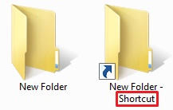
Same same with function delegates. When you call them, they call another function with the same signature, and it does the work. They delegate the work to others.
// This code makes a delegate Type BossWork. This is a bit like making shortcut folders available delegate void BossWork(string task); // Then you have to make a real delegate function. A bit like making // an actual shortcut, but not yet assigned a target folder. // In this case A boss, Sandra, has been given work, and seen fit // to delegate it. BossWork bossSandrasWork; // Other functions are assigned to receive the work delegated. // Witness Boss Sandra deciding the best way to "do" her work. bossSandrasWork = GeraldsTimeEnergy; // Look, she's "working" bossSandrasWork("writing her proposals.");
Why do we see this output of bossSandrasWork?
“Sandra drives me mental. All my time and energy is spent writing her proposals” grumbles Gerald to noone.
// Notice the delegate has to have the same function signature as // the function that delegated the work. If not you'd have random // errors trying to pass the wrong parameters, expecting the wrong // returns. void GeraldsTimeEnergy(string task) { Debug.Log("\"Sandra drives me mental. All my time and energy is spent " + task + "\" grumbles Gerald to noone."); }
Generics aka what is <that>?
Rather than start with a theoretical description, be relieved that you’ve already used generics and it wasn’t that hard.
- Here in c# you’ve used
List<Tower>, maybeDictionary<Weapon>.- In c++ some of you used
vector<string>
The generic bit means:
- Someone was able to write the
Listclass not knowing what type of object you’d store in it. They did that by putting<T>for type wherever you would put your object type.

Notice when I hover over “List” in VS I see List<T> and T is string
How do we structure it?
This is why we just learned events. When you make classic examples of inheritance, like a library system they have a natural heirarchy.
The relationships between character parts and the controls are are more like the readouts and controls in a car:
readouts are all doing a similar job but aren’t really related
readouts have a closer relationship to distant parts of the car than eachother and very different sensors
the controls don’t control the readouts… the control fuel entering a cylinder, or wheels turning, or lights toggling.
If we tried to make this into a heirarchy it just wouldn’t make much sense. You often end up with a big god class trying to control all this stuff with loads of references to things that behave differently. It gets unwieldy and, worst, hard to change or debug.
How to make your assignment!
Here’s a handy guide to pushing forward with your assignment.
Step 1: Scamp up the interface
You can’t plan your code till you plan your program
Step 2: Plan up your broad structure/strategy
- How will the big pieces be arranged?
- Which will need events and which will be directly referenced?
- What will our model look like
- How will you configure things in the long run?
Step 3: Classes/components
What classes/components will we need to make it all happen?
Step 4: Build something and iterate
- Make a very simple beginning.
- Begin to map out the structure in stubs with dummy return info
- Build and test.
- Refine/expand a bit
- Build and test.
- Loop 4,5 till finished.
To do / exercises
This 3 week assignment is serious go time. If you don’t work hard this week you’ll be in pretty bad shape. At a minimum do the first four.
- Type in my Event code and run it, understand it.
- Type in my delegates code, run and understand it.
- Write down assessment 2 in your own words to get your head around the details. Do it on paper if it helps you think/break things down.
- Scamp out the interface. Scamping is drawing it in line art for our purposes.
- Make cards for it on your hacknPlan board.
Resources
Helpful things
- Making a broader event manager for unity with special Unity events
- Unity official delegates tutorial video.